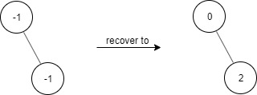
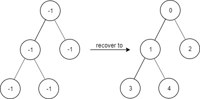
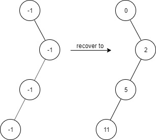

| Category | Difficulty | Likes | Dislikes |
|---|---|---|---|
| Algorithms | Medium | 1424 | 127 |
hash-table | tree | depth-first-search | breadth-first-search | design | binary-tree
amazon | google
Given a binary tree with the following rules:
root.val == 0treeNode:
treeNode.val has a value x and treeNode.left != null, then treeNode.left.val == 2 * x + 1treeNode.val has a value x and treeNode.right != null, then treeNode.right.val == 2 * x + 2Now the binary tree is contaminated, which means all treeNode.val have been changed to -1.
Implement the FindElements class:
FindElements(TreeNode* root) Initializes the object with a contaminated binary tree and recovers it.bool find(int target) Returns true if the target value exists in the recovered binary tree.
Example 1:

Input
["FindElements","find","find"]
[[[-1,null,-1]],[1],[2]]
Output
[null,false,true]
Explanation
FindElements findElements = new FindElements([-1,null,-1]);
findElements.find(1); // return False
findElements.find(2); // return True Example 2:

Input
["FindElements","find","find","find"]
[[[-1,-1,-1,-1,-1]],[1],[3],[5]]
Output
[null,true,true,false]
Explanation
FindElements findElements = new FindElements([-1,-1,-1,-1,-1]);
findElements.find(1); // return True
findElements.find(3); // return True
findElements.find(5); // return FalseExample 3:

Input
["FindElements","find","find","find","find"]
[[[-1,null,-1,-1,null,-1]],[2],[3],[4],[5]]
Output
[null,true,false,false,true]
Explanation
FindElements findElements = new FindElements([-1,null,-1,-1,null,-1]);
findElements.find(2); // return True
findElements.find(3); // return False
findElements.find(4); // return False
findElements.find(5); // return True
Constraints:
TreeNode.val == -120[1, 104]find() is between [1, 104]0 <= target <= 106